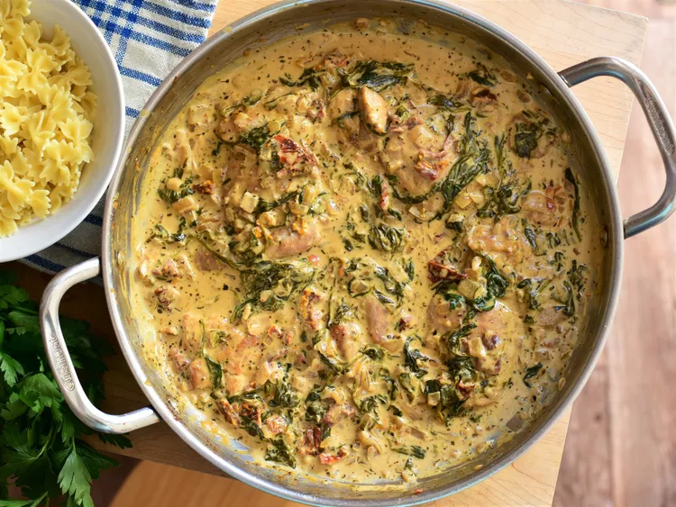

Pasta

Creamy Tuscan Chicken Pasta 30-minute dinner
Creamy Tuscan Chicken Pasta looks as good as it tastes. And it only takes half an hour to make! This dish is perfect when you want to make something yummy, but do not have a lot of time. The flavors come together so well, you will love the way the garlic, Parmesan, spinach, and sweet-tart sun-dried tomatoes taste. With a creamy sauce, penne pasta, and chicken, this Tuscan pasta is going to become a family favorite. And it is even better when you pair it with a tasty spinach salad and some buttery bread and dipping oil.
Ingredients
- 3 tablespoons olive oil
- 4 skinless, boneless chicken thighs
- ¾ teaspoon kosher salt
- ¼ teaspoon ground black pepper
- 1 large onion, finely chopped
- 4 cloves garlic, minced
- ½ cup dry white wine
- ½ cup chopped, drained oil-packed sun-dried tomatoes
- 1 cup low-sodium chicken broth
- 1 ½ teaspoons Italian seasoning
- 4 cups fresh baby spinach
- 1 cup freshly grated aged Asiago cheese
- 1 cup heavy cream
- 1 tablespoon freshly squeezed lemon juice
- 1 (16 ounce) package mini farfalle pasta
Steps
- Heat olive oil in a large skillet over medium-low heat.
- Season both sides of chicken thighs with salt and pepper, and place into hot skillet. Cook until golden, thighs are no longer pink in the center, and the juices run clear, 8 to 10 minutes per side. An instant-read thermometer inserted near the center should read 165 degrees F (74 degrees C). Remove chicken thighs from pan; set aside.
- Reduce heat to low; add onion and garlic to skillet. Cook and stir until softened, about 5 minutes. Pour in white wine and use a wooden spoon to scrape up any browned bits from the bottom of the pan. Cook until wine is almost evaporated, 3 to 5 minutes.
- Add in sundried tomatoes and cook for 1 minute. Stir in chicken broth and Italian seasoning. Bring to a simmer, and cook until mixture has slightly reduced, about 5 minutes. Add spinach to skillet and cook until wilted, 1 to 2 minutes.
- Reduce heat to low; stir in Asiago and heavy cream until well combined. Stir in lemon juice. Season to taste with salt and ground black pepper.
- Return chicken thighs to skillet; heat until warm, 5 to 7 minutes. Turn off heat; allow pan to sit off heat while cooking the pasta. Sauce will thicken as it cools.
- Fill a large pot with lightly salted water and bring to a rolling boil. Stir in mini farfalle; return to a boil. Cook pasta uncovered, stirring occasionally, until tender yet firm to the bite, 7 to 8 minutes; drain.
- Divide pasta between four bowls, and top each with chicken thighs and sauce to serve.